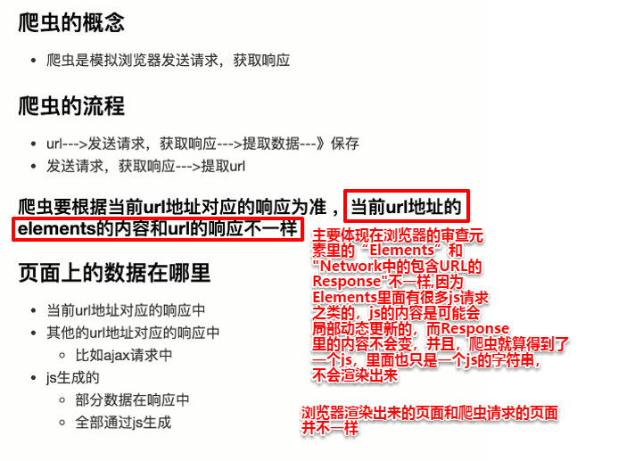

1、爬虫的原理
（1）概述

(2) 判断一个“ . ”后面的单词是属性还是函数（方法）的小技巧：
主要根据词性去判断，动词一般就是方法，而名词一般就是属性(并且方法有括号,属性没括号)
如requests.get() ，get很明显是一个动词，所以它肯定是一个方法，所以要加括号
再如requests.get().content.decode() ,其实就相当于
response=requests.get() ; response.content.decode()
可以看出，content是名词，所以它是一个属性，不用跟括号，而的decode是动词，所以是一个方法，后面要加括号
（3）response.text 和response.content的区别
更推荐使用response.content.deocde()的方式获取响应的html页面
response.text
• 类型：str
• 解码类型： 根据HTTP 头部对响应的编码作出有根据的推测，推测的文本编码 #但有时候系统推测出来的编
码方式很多时候都是错的，所以这方法一般最后实在猜不出来编码方式才使用，才让系统来判断。这个时
候系统的判断一般是比人要准确一些
• 如何修改编码方式：response.encoding=”gbk”
response.content
• 类型：bytes bytes类型的数据是二进制类型的数据，是一种没有经过任何修改的原汁原味的数据
• 解码类型： 没有指定
• 如何修改编码方式：response.content.deocde(“gbk”) #在python3中response.content.deocde（）方
法的默认解码方式就是utf-8，而大部分网页采取的编码方式方式就是utf-8，所以更推荐用
response.content.deocde（）方法来获得响应的html页面。若网页不是utf-8编码的，就很有可能是
gbk了，此时只要在括号里面填入gbk就可以，选择如何解码的优先顺序如下图所示：

2、HTTP常用请求头
（1）请求头的格式如下：

（2）各头部字段的含义：


1. Host (主机和端口号)
2. Connection (链接类型)(keep-alive表示常连接，也就是浏览器告诉服务器，自己支持复用上次的连接，支持使
用常连接，也就是一段时间内保持与该页面的连接，这样当短时间内再次访问该url时，不用再经
过三次握手四次挥手，有利于提高访问速度和效率）
3. Upgrade-Insecure-Requests (是否会升级为HTTPS请求，直译过来是：是否升级不安全的请求，0表示否，1
表示是)（比如若值为1，则但url写成 http://www.baidu.com时，会在访问改url前自动转换为
4. User-Agent (浏览器标识，也叫用户代理) （指明用户用的是什么浏览器，什么操作系统，
如 Mozilla/5.0 (Windows NT 10.0; WOW64) AppleWebKit/537.36 (KHTML, like Gecko) Chrome/69.0.3497.100 Safari/537.36
Mozilla/5.0 用来说明和Mozilla渲染引擎的兼容性，后面紧跟的(Windows NT 10.0; WOW64)是当前电脑的信息，
AppleWebKit/537.36是苹果浏览器的内核版本，Chrome/69.0.3497.100是Chrome浏览器的内核版本，Safari/537.36是
Safari浏览器的内核版本）
5. Accept (传输文件类型) （告诉服务端支持什么样类型的数据）
6. Referer (页面跳转处)（记录当前页是从哪个页面跳转过来的。比如在"百度知道"页面点了一个按钮，直接在当前
页(不另开一页)跳转到百度首页，则Referer记录当前页是从zhidao.baidu.com跳转过来的）
7. Accept-Encoding（文件编解码格式） （浏览器告诉服务端自己会接受什么样的页面压缩方式）
8.Accept-Language （浏览器接受的语言）（CN表示Chinese，中文）
9. x-requested-with :XMLHttpRequest (Ajax 异步请求)
10. Cookie （Cookie）
(1) Cookie和Session的区别：Cookie是保存在浏览器本地的，Session是保存在服务器上面的。Cookie由于
保存在浏览器本地，所以可以直接看见Cookie的内容，所以Cookie往往是不安全的；而Session保存在服
务器上，一般用户无法获取到其内容，所以Session往往是安全的
(2)Cookie在请求头里的内容如下图所示：

Cookie表的内容如下图所示：（表里的记录不齐全，还有很多记录没截进来，这只是一部分）

可以看出请求头里的内容和Cookie表的Name属性和Value属性一一对应，用等于号“=”将二者连接，并用分号隔开一条条记录。而Cookie表除了Name和Value属性，其他属性在请求头里并没有什么用。
3、url的形式
形式 ：scheme://host[:port#]/path/…/[?query-string][#anchor]
scheme：协议 (例如：http, https, ftp)
host：服务器的IP地址或者域名 （所以说也可以直接写IP地址）
port：服务器的端口（如果是走协议默认端口，80 or 443）
path：访问资源的路径
query-string：参数，发送给http服务器的数据
anchor：锚（跳转到网页的指定锚点位置）（如 http://item.jd.com/11936238.html#product-detail ，将在页
面渲染出来后直接跳转到该URL页面中的product-detail部分）
4、Python3中的两种字符串类型
• bytes：二进制
互联网上数据的都是以二进制的方式传输的，所以从互联网上爬取的响应内容都是二进制的形式，所以
如果我们想看一下响应的内容的话，第一件事就是进行解码：decode（）
• str ：unicode的呈现形式
ASCII编码是1个字节，而Unicode编码通常是2个字节。
UTF-8是Unicode的实现方式之一，UTF-8是它是一种变长的编码方式，可以是1，2，3个字节
5、request请求
（1）状态码


（2）其他用法


6、发送带参数的请求
什么叫做请求参数：
wd就是参数名，python是它的值，参数与参数之间用“&”符号连接。
• 参数的形式：字典
• kw = {'wd':'长城'}
• 用法：requests.get(url,params=kw)
记得此时的url要带上参数前面的所有字符，也就是url要写成https://www.baidu.com/s?
所以其实加上参数也就是相当于url与params的一个直接拼接而已
所以，既然params只是一个简单的url拼接，那么就有了更简单的方法，直接用其他方法来生成url，而不使用url和参数分开这种更费力的方法。

7、requests模块发送post请求
（1）发送post请求常见的情况是
• 登录注册（ POST 比 GET 更安全）
• 需要传输大文本内容的时候（ POST 请求对数据长度没有要求）
（2）用法：
data 的形式：字典
（3）举例：以有道翻译为例
首先要在Network中找到同时包含输入数据和得到的结果的数据包。(找文件的技巧是自动跳过js、css以及图片文件，因为这些文件必然不是我们需要的数据包，然后可以看一下剩下的文件名，一般文件名会跟结果有些联系。接着，在Response和Preview中看看能不能同时看到输入数据和结果，若能看到，则该数据包必然是我们需要的)

然后便是找到响应的需要的值来写代码:

可以看见，PC端浏览器下From Data有很多字段，很难判断哪些有用哪些没用，就算判断出来，也要花不好时间，并且，由于很多字段在Elements搜不到，是用js生成的，所以处理起来会比较麻烦。这个时候，可以换一种思路，将User-Agent换成手机端或者平板端，说不定会有意想不到的结果，使得需要处理的数据大大减少，以下就是手机端得到的数据包：

以下是在User-Agent为手机端时的post请求获取网页：

8、使用代理IP
（1）为什么爬虫需要使用代理？
• 让服务器以为不是同一个客户端在请求
• 防止我们的真实地址被泄露，防止被追究
（2）用法：requests.get("http://www.baidu.com", proxies = proxies)
proxies的形式：字典
proxies = {
"http": "http://12.34.56.79:9527", #proxies字典里面一般只放一个，但也可以放两个，
"https": "https://12.34.56.79:9527", #因为是字典，几个字段都行，无所谓
}
一般来说请求的是http的url，那么就放http的代理IP地址，如果请求的是https的url，就放https的代理IP

（3）使用代理IP的思路：

9、爬取登录后页面的方法
带上cookie的好处 ：
能够请求到登录之后的页面
带上cookie的弊端：
一套cookie和session往往和一个用户对应
请求太快，请求次数太多，容易被服务器识别为爬虫
不需要cookie的时候尽量不去使用cookie
但是为了获取登录之后的页面，我们必须发送带有cookie的请求
requests 提供了一个叫做session类（注意这里的session是requests的一个类，而不是服务器的保存的那个
session的意思），来实现客户端和服务端的会话保持
使用方法：
1. 实例化一个session对象
session = requests.session()
2. 让session发送get或者post请求
response = session.get(url,headers)
具体代码如下：
方法一，实例化requests中的session类，自己输入用户名和密码来登录，使session实例获得登录后的cookie，进而访问登录后的页面：


方法二，复制登录成功后请求头里的cookie，直接放在headers里用requests.get（）访问登录后的页面：

方法三：也是复制登录成功后请求头里的cookie，但是是将它再切分处理成字典形式，传入requests.get（）参数cookies里，而不放在requests.get（）的参数headers里面（这方法比第二种略麻烦，第二种是最快的，尽可能使用第二种）

总结：


10、字典推导式，列表推导式


11、requests小技巧
（1）cookie与url编解码

2、 请求SSL 证书验证
response = requests.get("https://www.12306.cn/mormhweb/ ", verify=False)
3、设置超时
response = requests.get(url,1)
4、配合状态码判断是否请求成功
assert response.status_code== 200